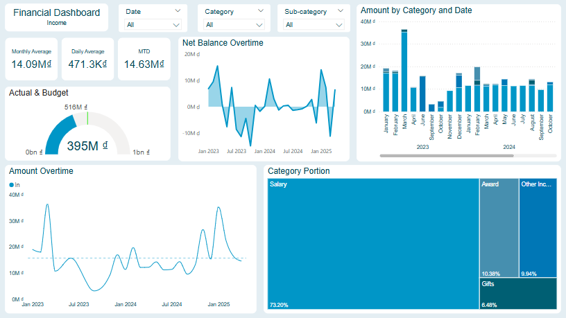
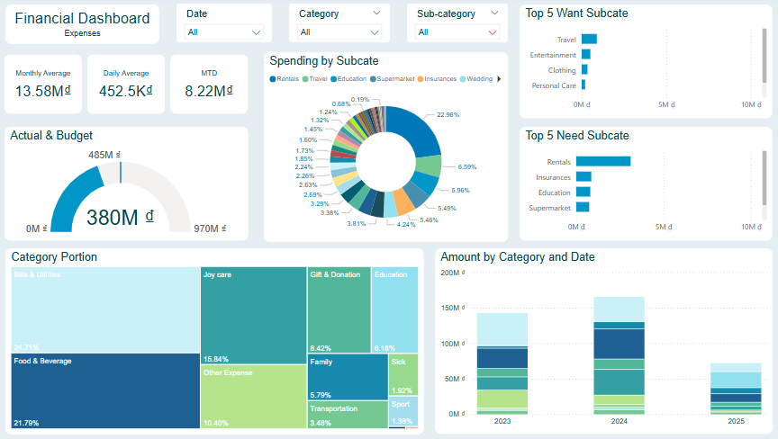
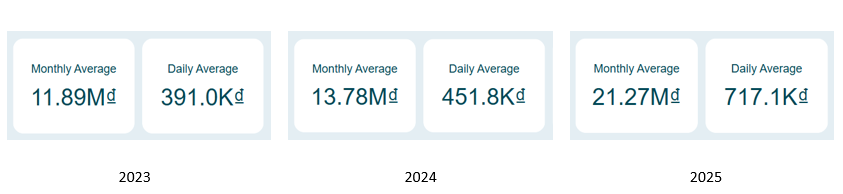
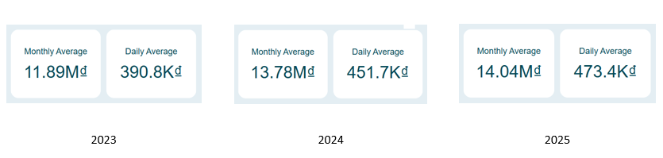

Project type: Data Cleaning, Financial Analysis, Behavioral Analysis, Dashboarding
Tools: Python (Pandas, NumPy), Power BI, CSV exports
I use a financial budgeting app that allows the creation of multiple wallets. I maintain two:
Whenever I spend money from my personal wallet and mark it as "Transfer to Shared Wallet", I contribute that spending to the shared expense. All expenses from the Shared Wallet are considered 50% mine. From this data, I want to consolidate and normalize these datasets to reflect my true financial picture.
Project Goal: This project aims to analyze personal financial data to improve budgeting efficiency and spending habits. Specifically, the objectives are to:
To begin the analysis, I exported transaction data from my personal financial budgeting application. The data consists of two separate CSV files, each representing a different wallet, but sharing the same structure in terms of columns. However, during the initial review, I identified a key data integrity issue: inconsistent categorization of transactions. Over time, I had classified expenses and income entries into overly specific or overlapping categories (e.g., “Dining Out” vs. “Restaurants”), which reduced the clarity and usability of the data for higher-level analysis. To resolve this, I will implement a category consolidation process, merging similar or semantically overlapping categories into a standardized set of broader categories (e.g., combining “Coffee”, “Snacks”, and “Restaurants” into “Food & Dining”). This normalization step was essential to ensure consistency, enable reliable aggregation, and enhance the quality of insights derived from the analysis.
import pandas as pd
import chardet
import numpy as np
from dateutil.relativedelta import relativedelta
The source data is exported as CSV with Vietnamese locale and uses tab separators. I use chardet to detect the correct encoding before reading the files:
def detect_encoding(file_path):
with open(file_path, 'rb') as f:
raw_data = f.read()
return chardet.detect(raw_data)# Checking encoding of spending_pw.csv (for debugging)
encoding_info = detect_encoding('spending_pw.csv')
print("Encoding info:", encoding_info)
# Import input data
pw = pd.read_csv('spending_pw.csv', encoding=encoding_info['encoding'], sep='\t')
# Checking columns' name, columns' type
print(pw.dtypes)A reusable function was built to normalize any exported file from the app:
date field to ISO formatdef cleaning(file_name):
df = pd.read_csv(file_name, encoding=encoding_info['encoding'], sep='\t')
df.columns = df.columns.str.lower()
df['date'] = pd.to_datetime(df['date'], format='%d/%m/%Y').dt.strftime('%Y-%m-%d')
df = df[df['date'] >= '2023-01-01']
return df
By simply applying the cleaning function above for the files have already exported from sources
sw = cleaning('spending_sw.csv')
sw['wallet'] = 'shared wallet'
pw = cleaning('spending_pw.csv')
pw['wallet'] = 'personal wallet'My contribution to the shared wallet is validated by comparing:
This step ensures data accuracy and removes redundant records after verification:
pw_spend_to_sw = pw[pw['note'].str.contains('Transfer to Shared Wallet', na=False)]
sw_income = sw[(sw['amount'] > 0)]
print('different between sw_income and pw_spend_to_sw = ',
abs(sum(sw_income['amount'])/2) - abs(sum(pw_spend_to_sw['amount'])))
The analysis revealed a discrepancy of VND 432,000. This indicates that at some point, certain transactions may have been missed, misclassified, or inconsistently recorded. Despite this difference, the gap is relatively small in the context of total spending and is considered within an acceptable margin of error for personal finance tracking. This highlights the importance of regular data reviews to maintain accuracy while also emphasizing that minor inconsistencies can be tolerated without significantly impacting the overall financial picture.
So, to avoid double-counting internal transfers, I removed sw_income records from the Shared Wallet and pw_spend_to_sw records from the Personal Wallet. I then concatenated the two cleaned datasets into a single dataframe for unified spending analysis.
pw = pw[~ pw['id'].isin(pw_spend_to_sw['id'])]
sw = sw[~ sw['id'].isin(sw_income['id'])]
# Expenses of sw that belong to me is half of every transaction
sw['amount'] = sw['amount']/2
pw = pd.concat([pw, sw])
pw.drop(['id'], axis=1, inplace=True)
pw.reset_index(drop=True, inplace=True)
pw = pw.loc[~ pw['subcate'].isin(['Debt', 'Debt Collection', 'Loan', 'Repayment'])]pw = pw.loc[~ pw['note'].str.contains('Send to|Received', na=False)]In or Outpw['type'] = np.where(pw['amount'] > 0, 'In', np.where(pw['amount'] < 0, 'Out', None))
pw['amount'] = pw['amount'].abs()pw.rename(columns={'category': 'subcate'}, inplace=True)
conditions = [
pw['subcate'].isin(['Breakfast',
'Lunch',
'Dinner',
'Café',
'Weekend Dinner',
'Nước',
'Healthy eating',
'Food & Beverage',
'Weekend Lunch',
'Supermarket',
'Đi Chợ',
'Gas Bill',
'Supermarket'
]),
pw['subcate'].isin(['Phone Bill',
'Bills & Utilities',
'Fees & Charges',
'Rentals',
'Online fee',
'Things Needed'
]),
pw['subcate'].isin(['Grab',
'Petrol',
'Parking Fees',
'Vehicle Maintenance',
'Transportation']),
pw['subcate'].isin(['Clothing',
'Shopping',
'Footwear',
'Comestic',
'Electronics',
'Personal Care',
'Entertainment',
'Travel']),
pw['subcate'].isin(['Mom',
'Family',
'Home Improvement',
'Home Services']),
pw['subcate'].isin(['Doctor',
'Pharmacy']),
pw['subcate'].isin(['Collect Interest',
'Cashback thẻ TD',
'Other Income',
'Selling']),
pw['subcate'].isin(['Sports',
'Health & Fitness']),
pw['subcate'].isin(['Education',
'Books']),
pw['subcate'].isin(['Lì Xì',
'Gifts & Donations',
'Wedding',
'Charity',
'Funeral',
'Friends & Lover',
'Lover'],),
pw['subcate'].isin(['Tax',
'Other Expense',
'Business',
'Outgoing transfer',
'Business meal',
'Insurances',
'Saving'])
]
categories = ['Food & Beverage',
'Bills & Utilities',
'Transportation',
'Joy care',
'Family',
'Sick',
'Other Income',
'Sport',
'Education',
'Gift & Donation',
'Other Expense']
pw['cate'] = np.select(conditions, categories, default=None)In recent months, I subscribed to a healthy meal plan service called Emfresh. However, I did not actively track my food-related expenses during that period. To evaluate the financial impact of this subscription, I conducted an analysis comparing the average monthly food expenses during the Emfresh subscription months with those of non-subscription (normal) months. The Emfresh periods were easily identifiable and filtered for comparison.
# Ensure 'date' is in datetime format
pw['date'] = pd.to_datetime(pw['date'])
# Extract month in YYYY-MM format
pw['month'] = pw['date'].dt.to_period('M')
# Filter months where 'note' contains 'Emfresh'
months_with_emfresh = pw.loc[pw['note'].str.contains('Emfresh', na=False), 'month'].unique()
# Get months where 'note' does NOT contain 'Emfresh'
months_without_emfresh = pw.loc[~pw['note'].str.contains('Emfresh', na=False), 'month'].unique()
# Sum amount where cate = 'Food & Beverage', grouped by month
food_beverage_data = pw[pw['cate'] == 'Food & Beverage']
sum_by_month = food_beverage_data.groupby('month')['amount'].sum()
# Calculate average for months that contain 'Emfresh'
avg_amount_with_emfresh = sum_by_month.loc[sum_by_month.index.isin(months_with_emfresh)].mean()
# Calculate average for months that do NOT contain 'Emfresh'
avg_amount_without_emfresh = sum_by_month.loc[sum_by_month.index.isin(months_without_emfresh)].mean()
# Display results
print('different between using Emfresh and not using: ',
avg_amount_with_emfresh - avg_amount_without_emfresh)
Based on the analysis, I found that the difference in monthly food expenses when using the meal plan service is approximately 1.3 million VND. With this insight, I have decided to use the service selectively in situations where it is most suitable and cost-justified.
To publish this project safely, I randomized all values slightly (±20%) to preserve privacy while maintaining pattern validity. Beside, I also deleted the 'note' column
pw['amount'] *= np.random.uniform(0.8, 1.2, size=len(pw))
pw.drop(['note'], axis=1, inplace=True)
Income Page:
Income Trend
By analyzing the monthly and daily average income over multiple years and reviewing the “Amount Overtime” line chart, it’s clear that my average monthly income has shown year-over-year growth.
In 2023, income was highly volatile. A strong surge early in the year was followed by a sharp decline, largely due to a strategic career shift mid-year. Despite this transition, I successfully recovered by year-end, signaling a strong rebound.
From early 2024 onward, income growth became more stable and consistent, with steady month-to-month increases.
The notable spikes in late 2024 and early 2025 correspond to 13th-month salary payments, reflecting periodic high-income events. Overall, the rising income baseline highlights not only a full recovery but also sustained growth and improved financial resilience post-transition.
Income Structure – Heavy Reliance on Salary
The Category Portion visualization shows that Salary contributes 73.20% of my total income. This is reasonable for a full-time employee, but it also reveals an opportunity for income diversification. To enhance financial resilience, I plan to explore additional income streams such as:
Seasonality in Income
From the Amount Overtime line chart, a clear seasonal pattern emerges:
Net Balance Evaluation
The Net Balance Overtime chart indicates that while I consistently maintain a positive net balance, it is moderate and shows room for improvement. To optimize this:
Forecast Accuracy
The Actual vs. Budget gauge visual compares real income with a target calculated as the average of the past six months. The current actual income closely aligns with the forecast, indicating:
Expense Page:
Average Monthly Expense trend
To analyze how my financial habits have evolved over time, I began by reviewing my average monthly expenses across different years using a year-based filter. The initial visualization below shows a clear upward trend in spending, which aligns with the changes in my lifestyle and financial capacity during the observed period.
Notably, a significant portion of my expenses in 2025 was allocated to the Education category, which had minimal or no spending in 2023 and 2024. To obtain a more accurate year-over-year comparison, I excluded this sub-category from the analysis. The updated chart below reflects this adjustment.
After refining, I observed a 15% increase in average monthly expenses from 2023 to 2024. This rise can be attributed to increased income and the absence of a structured budgeting plan during that period. From 2024 to 2025, expenses increased by a more modest 2%, despite seasonal spending peaks during Tet holidays and general inflationary pressures. This smaller growth reflects improved financial discipline and a more intentional approach to personal budgeting.
From Essentials to Growth: How My Spending Priorities Shifted
| Category | 2023 | 2024 | 2025 |
|---|---|---|---|
| Bills & Utilities | 32.44% | 21.28% | 17.28% |
| Food & Beverage | 20.01% | 25.58% | 16.69% |
| Other Expense | 17.62% | 7.88% | ~3.5% |
| Joy care | 13.04% | 21.81% | 7.87% |
| Gift & Donation | 8.30% | 8.90% | 7.54% |
| Transportation | 3.38% | 3.59% | 3.53% |
| Family | 2.22% | 6.24% | 11.82% |
| Sport | 1.0% | ~1.0% | — |
| Sick | 1.2% | 1.0% | 1.0% |
| Education | — | — | 31.43% |
Between 2023 and 2025, my expense categories shifted notably, reflecting changes in lifestyle, values, and financial discipline. In 2023, spending was primarily concentrated on Bills & Utilities (32.44%) and Food & Beverage (20.01%), indicating a focus on basic living needs. Other Expense also made up 17.62%, suggesting a lack of strict budgeting or classification.
In 2024, the structure diversified. Food & Beverage rose to 25.58%, becoming the largest category, while Joy care saw a substantial increase to 21.81%, indicating more spending on personal satisfaction and leisure. Meanwhile, Bills & Utilities dropped to 21.28%, and Other Expense decreased sharply to 7.88%, signaling better category tracking and control. Family-related expenses also began to emerge (6.24%), pointing to evolving responsibilities.
In 2025, there was a decisive shift in spending priorities. Education became the dominant category at 31.43%, reflecting a major investment in personal development. Bills & Utilities further declined to 17.28%, and Food & Beverage dropped to 16.69%, highlighting reduced day-to-day consumption in favor of long-term growth. Family expenses continued to rise (11.82%), reinforcing the trend of increasing responsibility. Notably, discretionary categories like Joy care and Other Expense dropped significantly to 7.87% and ~3.5%, respectively, demonstrating a more intentional and controlled approach to budgeting.
Overall, this progression illustrates a clear evolution from meeting essential needs in 2023 to emphasizing personal growth and structured financial planning by 2025.
Key Takeaways from 'Need' and 'Want' Subcategory Trends